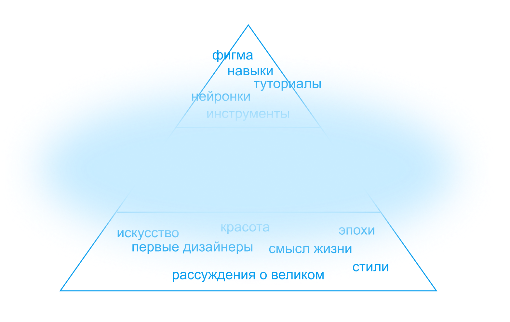

Where do so many designers come from?
Author: Nikita Nova. Editor: Dasha Kochenova. Privy Councilors: Zhenya Arutyunov, Lyudmila Sarycheva 10.07.2025Part 1. Reality and statistics
We will talk about this because every month tens of thousands of people google:
- How to become a designer?
- Where should I go to study?
- How much can you earn?
- What are the directions?
There are currently around 2,500 designers studying at the HSE Design School. Just imagine how much competition there is for every place. All major YouTube channels are filled with advertisements for design courses. If you're reading this, chances are you're a designer too. Why is it that now, in 2025, as I write this article, everyone wants to become a designer?
There is always a basic answer to such questions: “Of course, this is all technological progress. This is the world. That's all." What is this world like? Technological progress has already put elevator operators, rag pickers, clerks, and raftsmen out of work. These are thousands of people. Why did he take pity on the designers?
Guys, apparently we did something unique for this world. And I propose to look into this.
Disclaimer
This is not another lecture about the history of design, but filling a gap. At university I studied to be a designer, so I watched and lectured on the history of design several times a week for 3 years. In all the wealth of this material there was no answer to two main questions:
- When did designers become in demand?
- Why is there such a big demand?

You won't read the entire history of design here. We will hardly talk about styles, main designers, significant works and art. But we will look at a specific time period of design development. And not in a vacuum, but in conjunction with the economy, wars, propaganda and industry of that time. In general, with everything that is usually left out of the classic “good” lectures on design.
Prepare the full range of your feelings, an ambiguous story begins that still affects each of us.
Part 2. Locomotives and roses
First, let's understand when people noticed the existence of design. How did this happen? What problems did the early designers face?
What was the world like?
There were three significant events in the 18th, 19th and 20th centuries that allowed design to take off like a rocket into the 21st century. At this time, a series of events occurred that turned the artisans in the shops into the main rock stars of the whole world.
The first event is Wedgwood inventing a catalogue. Trade is developing. Shop windows are appearing in stores. Anyone can come, choose and buy a finished product. Instead of looking for a master. Order an item from him according to individual parameters. And it's a long wait. And pray that everything will be fine.
Things that were made thousands of kilometers away from you become available. There was a choice. Now each person can choose a cup, vase and gloves. Beauty has become accessible to more people.
Now every European can endlessly select interior items: porcelain, glass and textiles. This fuels interest in independently designing the space in which he lives and works. Changing a house is more difficult than hanging the curtains and putting in a new lamp and kettle.
In 1774, the first catalog of finished porcelain tableware appeared. It was launched by Wedgwood's pottery shop. Before this, each cup and plate was ordered separately. Each set was individual. Wedgwood reduced the variety of tableware and kept only the best-selling sets in the catalogue. Which, moreover, were associated with something royal and luxurious.
Catalogs have added many new complications. For example, now each cup must be a perfect copy of its catalog photograph. There were more and more defective products.
The second event is the First Exhibition of Design and Technology. In 1851, the First Exhibition of Design and Technology was held in England. This event was attended by guests and exhibits from 18 countries from all continents of the world. This is the first event in history where 6 million people came together to discuss inventions.
The picture at the exhibition looked something like this. There are modern machines all around that would have been unimaginable a couple of decades ago. There are exhibits around, some of them are 3-4 human height. People look at and discuss black shiny cars. Everything is new and technologically advanced. Now we will all live together in a future that we never dreamed of yesterday...
And the furniture and plates stand the same as they did 100 years ago. In monograms, gilding and roses. Just like my grandparents. When the exhibition ended, its organizers - Prince Albert and Henry Cole - were shocked by the difference. We urgently need to change something.

{kind=link}
{kind=link}
{kind=link}
{kind=link}
{kind=link}
{kind=link}
{kind=link}
{kind=link}
{kind=link}
{kind=link}
{kind=link}
{kind=link}
{kind=link}
Third event - Coco Chanel invents ready-to-wear. In 1929, Coco Chanel invents a new format for clothing production. She called it pret-a-porter. It sounds like something from couture. But in fact, there is a 100% probability that you are now reading this article in such clothes. Tailors have developed several universal sizes: S, M, L, XL. Each collection was presented in these basic sizes. There was no longer any need to create an outfit according to individual measurements each time.
Chanel made a business out of design. Now this is the only approach to design that we will continue to see throughout history. Get your fork ready, we've gotten to the meat.
{kind=link}
{kind=link}
First reason. New production and purchase scenario
People began to buy goods in a new way. Previously, a person would come to a specific master. And the master created the design directly depending on the customer.
Now a group of impersonal workers create designs based on some average ideas about the consumer. A person looks at the display case and chooses from what is available.
The new process of producing and purchasing goods makes the designer a major participant in the market.
Part 3. Power and altushki
Since designers now have so much power in their hands, we need to get to know those who have all this power. Let's return to the World Exhibition of Design and Technology. People paid attention to the design.
Globally in England there were two groups and four main characters. All of these men had a child out of wedlock. Now we call it Modern.
The first group is the state
How it appeared. Prince Albert and Henry Cole founded the Department of Science and Art two years after that very exhibition. And then the department took over the state school of arts - the main place in the country, which set all the trends.
{kind=link}
{kind=link}
{kind=link}
The main person. Christopher Dresser worked at this school. The collaboration between Christopher, Albert and Cole was truly productive. Firstly, he immediately found a common language with management. Secondly, he really was talented. This genius was 50 years ahead of the rest of the design world. Literally, if you look at his work, we will think that this is the Bauhaus in the 30s, 40s of the 20th century. But in fact, we have before us one person who worked at the end of the 19th century.
{kind=link}
{kind=link}
{kind=link}
{kind=link}
{kind=link}
{kind=link}
Principles. Christopher Dresser was inspired by two phenomena. Japan - with their functional minimalism. And botany - with logic and the desire to discard everything unnecessary. In botany, diagrams of plants and the processes that occurred inside plants were drawn. This idea of “discarding the superfluous” appeared precisely then, and only later will Malevich, the minimalists, and even the Bauhaus remember it.
{kind=link}
{kind=link}
{kind=link}
{kind=link}
The second group is the Pre-Raphaelites
How it appeared. There was also an opposition group of designers. It was a less formal society: just designers and artists with similar views on life went to meetings and discussed the doom of humanity. The “Pre-Raphaelite” movement developed in the second half of the 19th century. They fought against the conventions of the new ethics, academic traditions and blind imitation of classical models. That is, with everything that the first group of designers did.
The main person. The main figure there was William Morris. This is the first person who generally called himself a designer. In 1883, when joining the political organization of England, he indicated “designer” in the “profession” column.
{kind=link}
Principles. The Pre-Raphaelites denied what would later give all designers the opportunity to live and work - industry, progress and machines. They believed that technological progress kills everything human that is in us. Therefore, we, as designers, should never be friends with him. Instead, we need hand-made factories and fraternal productions. In short, they wanted to do everything just like in the Middle Ages, which they romanticized.
{kind=link}
{kind=link}
{kind=link}
Difference and similarity
Let's sum it up.
{kind=link}
This is what I want to emphasize separately in this part. Both the first and second still did all their work by hand. They depended on the material they worked with, because the material still determined the specialty of the master. No matter how cool the machines and machines are, they are needed for factories and heavy industry. Their main function is to build equipment to defend the country. And not to make plates. People's livelihoods still depended on other people in small factories: tailors, carvers, glassblowers, tanners, potters. Let's record...
Second reason. People strived for lagging design
The Industrial Revolution accelerated the pace of life in society. Due to technological advancement, people believed for the first time that the future could be better than the past. The design couldn't keep up with this.
People believed that they lived in the future. Cars and steam locomotives are already driving on the street. The entire city is built up with plants and factories.
This further reinforces the belief that a bright future has arrived now. And how much misunderstanding the gilded roses cause in this way of life. This lame dog was noticed in the community. We didn’t understand what to do with it yet, but it was a pity.
Part 4. America and gold
Imagine the time of the First World War. Countries in the world are unofficially divided. The principle of division is the influence of an economy on overall trade in the world. That is, how many goods a country can offer to buy from itself and how cheap it is. The terms “Large” and “Catch-up” economies appeared. The Greater Economies included: Great Britain, Germany, Russia, France and the USA.
America was the only country with a Big Economy that participated in the war indirectly and pragmatically. And that’s why I was able to earn money. The main sources of money were two things: exports and loans. Since the fighting took place in Europe, America could safely produce goods and supply them to allied countries without fear of bombing or factories being looted.
Great Britain, France and Russia bought goods from America and took out loans. They bought cotton, wheat, copper, rubber, cars, engineering products and thousands of other raw materials and finished goods. During the war years, the total value of American exports nearly tripled, from $2.4 billion in 1913 to $6.2 billion in 1917. The American economy received a huge boost to development. The country's unemployment rate has decreased. Businesses have an increased market.
{kind=link}
Gold
And the government also managed to lay out straws for itself. During the war years they accepted payment only in gold. “It’s not that we don’t trust your European currencies, but please finish your business first and then we’ll talk. In the meantime, we can offer to pay us in gold or bring them to keep theirs in our banks. It's safe here."
And it worked. During World War I, American gold reserves tripled. They owned approximately 6,500 tons of gold. This is 40% of the world reserve.
Why does the volume of gold affect the economy so much? The Gold Standard does its job. This means that every dollar is backed by a specific piece of gold that is in your country's safe. If there is $1,000,000,000 worth of gold in the safe, then $1,000,000,000 worth of bills, coins and papers are circulating among people in the country. You won’t be able to print another million, another one won’t work. But if you have 40% of all the world's gold, then you don't need it. Chew your ass for money.
Dawn, jazz, credits
America has changed before our eyes!
{kind=link}
Firstly, dawn began. Skyscrapers were built in New York and Manhattan, which were to become the largest business centers in the world. There were bars on every street. Jazz was playing from everywhere. Beautiful girls in short skirts and short hairstyles danced tango. With equally handsome guys in expensive suits. Every day was a holiday.
Secondly, since there is a lot of money, it is possible to give people loans at low rates. How it works: the basic rule of economics is “the more a resource, the cheaper it is.” Money is the same resource as wood. Therefore, when there is a lot of free money in the country, the rates on loans and mortgages become lower, because the money itself becomes cheaper. I think over the past 3 years you have definitely noticed interest rates on loans and mortgages in Russia. You can't unsee this. It works on the same principle. It’s just that at this time and in this country money is expensive.
Returning to America, this is how life on credit appeared. This means that now ordinary people can afford things much more expensive than what they really can afford.
{kind=link}
{kind=link}
{kind=link}
Factories are working at full capacity
Thirdly, more jobs appeared and production developed. There was a demand for goods, this helped raise wages to a decent level, this created even more jobs. We need to feed all of Europe. At such times, there is a great incentive not only to carry out the work plan, but also to take old drawings out of the drawers, propose new ideas and refine old ones. This is what designers and engineers did. So, in addition to weapons and military equipment, trinkets also begin to roll off the assembly line: mixers, blenders, kettles, small, economical planes for travel.
{kind=link}
{kind=link}
{kind=link}
{kind=link}
{kind=link}
{kind=link}
The third reason: during the war, a lot of everyday equipment came to the common buyer
During the war and thanks to it, one significant event occurred. One point for the ambiguity of our world :) Many small inventions have already been developed quite well. At the same time, they learned how to make them easier and cheaper. They no longer exploded in the hands and can be produced quite cheaply. So you can send them to store shelves. We're talking about radios, commercial aviation, refrigerators, ovens, blenders, cameras, vacuum cleaners.
Yes, these are small changes. Well, what can you take from a regular mixer? This is not a revolution. The real revolution was the volume and mass production. They tried to replace all the people’s affairs with different devices and didn’t even ask permission. The factories realized that they could sell a lot of small, cheap items. And if you do this many times, you get good money.
But here a conflict of interest arises: the business has churned out cheap things. And people don’t fully understand why they should buy it? Yes, there are loans, there are goods. But why do I need a mixer if I’ve been beating eggs with a fork all my life and it was fine for me. The business was not happy with this answer - I want to slap you on the head and say, “Don’t fuck with your brain and buy it while they give it!” A softer solution was needed.
Part 5. Cars and uniqueness
We could talk about furniture, clothes, food. Yes, about anything! Why cars?
Firstly, cars in the 20th century became the main engine of progress. They also influence engineers, who were constantly inventing and modernizing something inside. And on society thanks to the massive use and excitement around it. And on the state thanks to the latent development of the military-technical complex.
Secondly, they are profitable to develop and there is a lot of attention around them. We multiply attention by benefits, and we get money. And where there is more money, there is competition and demand. Therefore, selling 1000 cars is not the same as selling 1000 mixers.
All this makes the car niche an indicator with high sensitivity to the changes that have taken place in society. This means that it is especially important for us what they came up with there.
Through the previous parts you definitely plunged into the vibe of those years. We have already talked about the world as a whole and descended to the level of society and everyday life. Now I propose to go down another level of detail below. And talk about the fate of one automobile company and a specific person inside.
White Crow
Let's talk about General Motors. From the very beginning, GM was created purely as a money company. Yes, cars were important to them, but rather as a rapidly developing market in which they could make money. GM is a business that was originally created for money. Nothing personal.
This was an unexpected strategy that only GM could pull off. Because other car companies made money from new developments. There, engineers worked hard: creating new models, improving technology, increasing safety, cutting costs, speeding up assembly lines, endlessly testing new ideas - and they scraped something into their pockets.
Ha, GM didn't get her hands dirty. They simply bought entire ready-made companies that had already done all the dirty work. For example, they owned the top-end Cadillac, Chevrolet and the lesser known Olds Motor Vehicle, Oakland Motor Car. In its first 10 years of operation from 1908 to 1918, GM bought 30 companies. They got their market share by the volume of companies, factories, jobs, rather than by real contribution to the development of engineering.
{kind=link}
Distribution of forces
There is one unpleasant fact. Not convenient for GM. It has to do with the fact that America's best-selling car... First, already existed. Secondly, it did not belong to them. Because it was a 1908 Ford Module T. It was Ford that was GM's main competitor. Yes, he did not have such volumes of money, people and production. But there was something more important - passion. For Henry Ford, the car is his philosophy, his wife and his life's passion.
{kind=link}
What made the situation worse was that this car was created under Henry Ford’s slogan: “We want those who buy our car not to have to change it. We're not going to make changes just to make the previous model obsolete."
The philosophy is good. All companies of the 20th century were built and developed according to this principle. It still remains relevant today.
And with this philosophy, Ford was the undisputed market leader. Even though they only had one car for sale. Imagine you walk into a store that only sells one product on the counter. And this is the Ford Module T. And 60% of all cars sold in the country were this “single product on the shelf.”
This happened because Ford considered the main thing to be price. Remember, business was just a way for him to implement his philosophy. And the philosophy is to let every person feel the thrill from the car that Ford himself experienced. Therefore, he tried to reduce the cost of the car through new developments and reducing existing costs. Make the car as accessible as possible.
{kind=link}
You're probably wondering at this point, where is GM with their endless catalog of acquired companies? What percentage of the market does such a rich and large company hold? 20? 30? The remaining 50? Almost... 12%. With all the brands it bought, GM only had 12% of the market. Compared to 60% for Ford.
{kind=link}
The boiling point is approaching
In addition to GM's personal loss in market share, another big common problem was looming for all car companies at once. Car sales began to fall.
On the one hand, in the 20s already 50% of people had their own cars. Who wanted it? Who could afford it? And for those who couldn’t do the same, remember about loans. All “warm” clients already owned a car. It was necessary to enter the “cold” part of the market. It's more complicated: longer, more expensive, more unpredictable.
On the other hand, more new cars were produced than old ones were broken. Until the car breaks down, why buy a new one? Remember that thanks to the First World War, they learned to make technology for years to come. Also Ford with its philosophy of durability. Therefore, the cars did not break down and people continued to drive them for years.
But I still want to earn new money. It's capitalism. Every month the market is narrowing, competition is growing. There is still money to fix everything. We need a good idea that we can spend this money on. We need to somehow force people to buy a new car, even if the old one is still working. And it stands in the yard beautiful.
The most important decision in the history of designers
{kind=link}
He was accepted just at GM, and Alfred Slow became the initiator. He joined the company in 1923 as a strategist and manager.
Alfred Slow proposed a new strategy for the company's development. Looking around at what the neighbors were doing, he literally did the opposite. He believed that the price of the car was really important. So did Henry Ford. But not from the point of view of car availability and endless dumping. And from the point of view of the new mechanics of manipulating people. This will be our salvation.
Alfred Slow proposed making a car display into a social ladder of society. GM should offer at least 5 different models at the same time. And they should differ not in inventions and gears inside. This is secondary. And above all the cost. Thus, it is necessary to provide models for all market segments: from the office clerk to the director of the company. For a car to be a confirmation of a person’s status and his career growth.
He pioneered what today we would call branding and positioning. Although there were no such words then.
Continuing to develop his strategy, Alfred Sloan makes another decision. Since 1924, new cars have not been released because of improved technology, optimization or improved safety. And for the sake of a new car design. After all, painting the same car and drawing a new body shape is easier. Remember, GM didn't get their hands dirty.
Investing in development is expensive and risky. Because it is difficult to plan how successful a new invention will be in society. And to get 1 good solution, you need to try and bury 10 others. But employees will still have to pay money for all 11.
{kind=link}
Now cars of various colors are starting to come off the assembly line. Moreover, every year a line of cars comes out in new colors. To make last year's colors obsolete.
An open confrontation begins. Henry Ford believes, “A car can be any color as long as it’s black.” And Sloan calls for new car designs to be so varied, colorful and attractive that they instantly cause dissatisfaction with older models.
So it was possible to recognize last year’s, and therefore outdated, model and the sucker behind the wheel in a second. Driving last year’s car is the same as driving around in 2025 with an iPhone 12 (that’s me talking to myself). Do you agree? Did you find out? Now the whole world is working according to this system. And we have already stopped noticing it. It's called Planned Obsolescence and it dates back to 1924.
The plane flew
How did GM begin to implement Alfred Sloan's plan? In 1925, Harley Earl opened the "Aesthetics and Color Section" at GM. He invited 50 of the most proactive employees there. Their task was to select colors, come up with new squiggles and see what else could be made “more beautiful” in the car. Yes, this is the first recorded design department in history. And 50 of the most proactive employees became the first designers at GM.
{kind=link}
In the first 5 years of operation of this department, the number of designers doubles. In 1929, more than 100 people already worked there. Yes, 100 people sit in a separate room and choose between the color “sea wave” and “turquoise”. At a time when Ford hadn't even thought about it yet.
All other companies, and not just automobile companies, caught wind of this and began hiring designers for themselves too. Planned obsolescence is rapidly showing strong sales results. Men with money are starting to believe in designers. Want. You don't want to. But in such a situation on the labor market, you, as a designer, will also believe in yourself.
The fourth reason: the emergence of planned obsolescence
Society wants something new every year. And I will offer it to companies and fill the demand. So you always need to do new things. And remind you to throw out the old ones. People will always have work because they will always have to stand on the production line.
Planned obsolescence can be like actual obsolescence. A glass phone gets scratched, eco-leather shoes get washed, a synthetic T-shirt gets covered in pellets. So it is psychological - pressure on our desire to be “one of us among our own.”
Design has become an ideal tool. Because it solves both problems at once. Helps to design profitable things and puts pressure on human dignity.
More gold!
Remember, it's still the roaring 20s. Abundance! Wealth! Permissiveness! For decades now the whole country has been living in grand style. In 1926, 90% of all cars were purchased in installments. All problems are far away. Or rather, on the other hemisphere. If you were about 30 at that time, you would not only have had time to get high yourself. But also raise your children with a golden spoon in their mouth. And it’s like this life is on credit. The stakes are small, but the money is much greater. Let's figure it out.
Then something happened that no one was prepared for.
Part 6. The Great Depression and the Economy
We've been talking about the Roaring '20s this whole time. This is what downtown New York looked like back then.
{kind=link}
And after a couple of years - in 1929 - Central Park began to look like this.
{kind=link}
What's happened
We are delving into a complex topic. Now there will be a lot of simplifications. They are needed to quickly tell such a topic. After all, our article is about design, but now it will be about economics and politics. Smack for your erudition, to everyone who already knows the topic more deeply.
Let's start the dive with a simple situation. You have a neighbor John. A couple of months ago he bought some kind of piece of paper at the bank, either a share or a bond. You have already forgotten. He spent $10 on it. And today he comes to visit you and says that his $10 turned into $30. Because the price of paper has increased. And now he can sell it for more and get $30. Or maybe not sell and then earn even more if the price of the piece of paper rises again. Absolutely legal. In a regular bank. Once you have regained your senses, what will you do? Buy the same piece of paper.
There were about half of the country's population like you and your neighbor John. In the 1920s, everyone bought both stocks and bonds. Even if you didn’t work in a bank and didn’t fully understand what it was all about. Because advertisements for these stocks and bonds were on billboards in every city across the country. And the purchasing process itself was simple. You come to the bank and give money. In general, general hysteria at the infobiz level in the 21st century.
There was a time of euphoria, everyone believed that America was a country that had overcome any adversity. Which means everything will only get better. And society in America will become richer every day. Tomorrow prices will always be higher than today. This means you need to buy as many pieces of paper as possible from the bank.
{kind=link}
First bubble of the 20th century
Now let's look at the same situation, but only from the bank's side. What will you do when the line at your door grows every day? You try to sell your papers for $15 instead of $10. This way you can earn more. And people still continue to buy. The next day the line got even longer. We are raising the price even higher, today we are selling pieces of paper for $20. But the number of people still increased.
Here we are in a self-fulfilling prophecy. The bank raises the price to make money. And people keep buying. Same. To earn money. Because it’s true, prices are getting higher every day. We need to grab it cheaper! It gets to the point where banks sell the same piece of paper for $30, and for $40, and for $50, and even for $100. And there are still no fewer people willing. On the contrary, by our actions we only further reinforce the belief in rising prices.
While the designers were repainting the cars in the bank, they were coming up with new prices. Over the 6 years of such trading, bond and stock prices increased by hundreds of percent.
We are at a point where you, the average person, and your neighbor John, are trying to save your money. And here you also have a chance to increase them. The value of pieces of paper, and therefore your assets, is growing.
At the same time, as a bank, you are trying to earn more and more money from each piece of paper sold. This way your business can take off. And you will actually support overall economic growth. And strengthen faith in him.
As a society as a whole, you all believe together in a bright, rich future. Imagine growing up in abundance your entire life. Your partner too. And you raised your child when the shelves are full of food, there are shows, movies, jazz, dancing, colorful advertising everywhere. You recently bought a second car and a vacuum cleaner. Everything is on credit, of course... but so what. And it’s not just you who are lucky, but the whole country has been living like this for ten years. Moreover, you are all ordinary people, and not anxious, conscious economists with connections to space. You don't know what could be different.
{kind=link}
And then
{kind=link}
Those same economists understood something. In the fall of 1929, it began to dawn on a small circle of people with great influence that the stock price did not correspond to the real state of affairs. Because the price of shares no longer reflected the growth of business profits, and depended only on amateurs in line at the bank. The minority of people who understood at least something in economics suddenly began to sell shares and thereby launched a wave of panic and a drain on shares. This is when you sell all the pieces of paper you bought. After all, while the smart guy with the mustache was buying shares. I'll buy it too. And when he started selling them. I will sell too! Two fateful days in history take place.
On October 24, 1929, Black Thursday occurs - a massive sale of stocks. Here the first guys with mustaches start selling shares.
On October 29, 1929, Black Tuesday occurs - a complete collapse of the stock market. Then it dawned on you and your neighbor John.
If you were alive in that day, this is what it would have looked like. You woke up, had breakfast, drank your morning coffee. We got into the second car, which we borrowed. We just managed to enter the office.
And shares of the entire country fell by 11% per second. This is just the beginning of the day. Then the stock price continued to fall. As a result, every person on the street lost at least 40% of everything they earned. In total, the country lost $30,000,000,000,000. This day will go down in history as “Black Tuesday.” Thus began the Great Depression.
{kind=link}
{kind=link}
People have lost everything
Banks went bankrupt one after another. Because they didn't have enough money to pay everyone who wanted to exchange their pieces of paper for money back. Remember, this price was taken out of thin air. The amount of money that was circulating in stocks across the country was not in banks.
Not only ordinary people suffered from this, but also the state. It kept money in the same banks that went bankrupt every day.
Mass layoffs began. Every 5 people were left without work. The crisis was so severe that cars ran on horses instead of gasoline, because there was no money for gasoline.
{kind=link}
People's lives began to change. People cut their expenses. The money in your wallet is running out. It is not clear when there will be new ones. → Prices in stores fell. People don't buy as much pasta and sausages as before. They have no money. Therefore, we will try to sell them at any cost before they spoil → Following this, the revenue of enterprises fell. Due to store sales, you no longer make as much money on your pasta. We need to slow down the pace of production. And at the same time save money by firing people → People were left without salaries. Because production no longer requires so many workers. It’s not clear what you will use to buy pasta and sausages next month. There is no salary, and therefore you won’t go to the store. And so on in a circle.
{kind=link}
This situation is called a “deflationary spiral.” The term is complex, but we will need it right now.
Spinning the spiral
The current government has been trying to pull the country out of the crisis for 4 years. Well, they tried and tried to mumble something. They still didn't succeed. We are not interested in this.
{kind=link}
Then in 1933, a new President, Roosevelt, came to power. This is what he came up with. If we have a spiral that twists in one direction and thereby creates a crisis. So that there is no crisis, it is necessary for it to begin to unwind in the other direction. Voila! How would we do this?
To do this, open the economics textbook in the “Keynesian” section. This direction is so called simply because John Keynes invented it. He suggested that the entire economy is built on one simple law. It sounds like this: “what is a waste for some is a profit for others.” This means that all the money is in endless circulation between people and companies. And there cannot be any money just resting.
{kind=link}
Now, if you take the deflationary spiral in one hand and Case’s law in the other, you can solve the crisis in the country and turn the spiral around. If we have no expenses → no profit. We need to make sure that spending appears → then people will have a profit → then people will start spending money on themselves → then the business will have a profit. This will help push the spiral in the opposite direction and return the country to the good old days.
{kind=link}
Yeah, the plan is clear! Where do we start? Still unclear...
Money! Money! Money!
Let's print money!!
What other answer did you expect from the United States? We will use this money to create government orders. For example, build a road here. Paint the fence here. Sew new clothes. Make pasta. And we will pay your salaries with printed money. Then you will take this money to the store. The factories will receive the same money. You will receive your salary with the same money. An injection into society from printed money.
Hooray! Demand has returned to the market. Now the expenses of ordinary families are rising → followed by prices in stores → then company revenues are growing → and finally salaries too! The spiral rushed in the opposite direction.
And now the most attentive will notice a discrepancy - where is the inflation? You can't just print money! Let's remember who has all the gold at home after the First World War? What country does the import of goods in Europe depend on? The crisis in America was not only disadvantageous for America. The whole world depended on this crisis.
Moreover, Roosevelt abolished the gold standard!
The same law that, at the beginning of our history, actually made America such a rich country. Now the dollar is no longer backed by gold. And did not depend on him.
This means print as much money as you want. Has the President of America gone crazy? No, it didn't piss off. So I took it and printed it to my heart's content!
7 years of famine
{kind=link}
We just listen and don't judge. Roosevelt's solution really worked. In his first 6 months in power, Roosevelt was able to show at least some positive results. Namely, the salaries of ordinary people. This gave hope to a country that had been immersed in a hopeless crisis for 4 years. Then, in another 3 years, he returned the level of US GDP to the pre-crisis level. The country returned to its previous life after 7 painful years.
Money gradually returned to people. At the same time, they did not have time to forget how good it was to buy a bunch of new trinkets. Every year, update everything that could be updated. The Great Depression exacerbated the unfulfilled need for endless consumption of goods. Now you have a whole country of poor people whose favorite toy was taken away for 7 years - to spend money.
Why did I waste your time
Since we've been talking about the Great Depression for so long, it means it really influenced the development of designers. What has changed?
First, the habit of consuming goods has become stronger. And this habit was formed just like any other habit. Through alternating two stages of euphoria from receiving a stimulus and withdrawal from not receiving the same stimulus. So in our history, at first there was a lot of money. Buy whatever you want! Then, during the crisis, they suddenly became catastrophically few. And finally the long-awaited opportunity to do this has returned.
Secondly, technophilia also appeared. This is a universal love for technological progress and its results. When you can no longer simply open a can of food with your hands, you must definitely use the Super Multi-tool 38 in 1 at a discount for $9.99. The main incentive for its appearance was precisely the fact that the government primarily restored production and factories. Just to get out of the crisis.
And it all adds up to this:
Fifth reason. People are convinced that the machine has a happy future
Among all professions and all possible types of income, it is the machine at the factory that is most likely to ensure the well-being of an ordinary family. Therefore, he helped return money to ordinary people.
At the same time, the machine at the factory helped and continued to send money back. People's demand had to continue to be satisfied. Considering that this is still very beneficial for all parties. It’s better to double production volume so as not to fall into a crisis again.
Tough times make strong kittens. Yes, the history of design development is directly related to wars and crises. And now you and I have gone through another one.
Now we are in America, which has just overcome the Great Depression. People remember how good it was before her. In stores, even in the niche of goodies and gadgets - this is when you have already bought pasta and choose a chocolate bar at the checkout - there was a lot of choice and competition. And all these desires were covered by loans. For several decades now, people have been told that this is happiness, status and value. And we look at how society began to develop further with all this context.
Part 7. Artists and plastic
But the 40s are already in the yard. One mustachioed guy is starting a new conflict in Europe. History repeats itself as during the First World War. When one hemisphere is at war, and the other sponsors them. This means that allied countries will again come running to buy American goods. And therefore, we need to again churn out everything that can be sold not only to ourselves, but also to buyers in Europe. We trained in the First World War, and now we will play big!
{kind=link}
Therefore, the first thing they will do is come to the designers to put everything back together. They will re-invent the same thing every year. Remember the first design department in history that chose new colors every year and drew new bodywork for cars. This will be our decision! While engineers spend 5 or 10 years inventing improvements, designers will help us sell the same thing. For example, Touch ID appeared in the iPhone 5s in 2013, and the next step in Face ID protection technologies appeared only in 2017 in the iPhone X. But at the same time, in 2014, 2015, 2016, new slightly redrawn iPhones were still released. In America, they began to use this particular combination in the 20s, and in the 40s they planned to go all-out with it.
In the previous parts we learned 2 important points. The first is that new things should appear more often. Alfred Sloan in the fifth part helped to understand the first principle. Second, old things should become old faster. Now we will analyze this point.
180° steering wheel
Now we, as designers, have a clear goal - to reduce the quality of things. To make them become obsolete faster, you need to understand how different materials behave. Throughout the entire history of mankind up to this point, man has done the opposite. We looked for the most durable material and ways to extend the time of use: wood and clay processing technologies, different types of leather and textiles. Now turn the steering wheel in the opposite direction.
Almost the entire production chain is ready. We know how - after the Great Depression, we realized that the future was in the assembly machine. We know that designers will come up with new shapes and silhouettes. But what should we use to create these silhouettes in our factories? Now we need a new material for production. Green flags for an ideal candidate are something like this:
- It can be stamped (literally!)
- Safe for huge production volumes
- Predictable production quality and low defect rate
- Wears out quickly
- Cheap
And people started looking for this material.
Worse, even worse!
Since most of the natural materials, which exist in large quantities and are easily obtained, had already been studied and tested for centuries, people clearly understood that they were not suitable, and then they began to shake chemists and their laboratories. Trying to find the answer there. In materials that appear as a result of chemical reactions.
In their search, people first turned the corner with celluloid. We tried to make different simple things out of it. To test how this material will behave. These were mainly glasses, small jewelry, and jewelry. It didn't work. The material was too fragile and demanding. There was only one use they could find for it. It was able to truly take root as film for cameras and cameras. Cheap cinema appeared. And following him is a chain of cinemas across America. All of humanity received a new and cheap sphere of entertainment. But this is not what we were looking for. Let's move on.
{kind=link}
{kind=link}
Then we ended up on the street with bakelite. It was invented by Leo Baekeland back in 1907. But then the development was not appreciated. This material is brown in color and resembles wood. Why do we need your faux bakelite chest of drawers in the early 20th century when we can buy one made from real wood? They didn't know yet :) what they were dealing with. Therefore, bakelite was considered as an alternative. To replace expensive wood with this cheap polymer. And closer to 40 years old, they remembered and began to take it more seriously. Bakelite was used to make boxes, watch and radio cases, and lamp bases. In general, interior items and equipment. Bakelite could be made translucent or painted in different colors, then it would look like amber, coral, jade and malachite. Dyed bakelite was used for cigarette holders, jewelry and clutch bags.
{kind=link}
Let us remember what happened in America during the First World War. A whole section of new products appeared on the shelves in the store - household appliances. It all runs on electricity. Oh, miracle! Bakelite turns out to be suitable for this.
Why don't we then live in a Bakelite world? Bakelite was the first shot in the right direction. Therefore, it was perceived more positively than it actually was. But there were many problems. Firstly, the cost of production. Secondly, the complexity and toxicity of production. Thirdly, I would like the external characteristics to be better - bakelite, like celluloid, remained fragile. Only here there is also a limited range of colors due to the natural brown tint. It is difficult to overpower such a rich, warm color with a cold dye without dirt in the final shade.
{kind=link}
{kind=link}
{kind=link}
Plastic!
The main trend has become plastic. It’s not that it was some kind of unique material, it just didn’t have the problems that competitors had. He was just normal. And this helped him win. Firstly, it is really cheap to produce. Secondly, it helped to completely solve the problem of “things that are good enough to buy but not good enough to use.” Therefore, in the store, plastic containers, lamps, plates gave the impression of a good quality item, but after a few months defects, abrasions, breakages appeared and, as if on a timer, the impeccable appearance was lost.
Propaganda
As soon as the benefits of plastic became obvious to manufacturers, companies began selling this idea to the public. But society was not against it.
Plastic made an impression on everyone. For example, from April 22 to 27, 1946, the Plastics Exhibition was held. On the first day, 20,000 people visited it. They showed disposable and reusable dishes, dolls, lamps, electronics, furniture, suitcases, accessories, and a bunch more. Two things made the most impression.
The first, transparent packaging for products. It was a revolution in the grocery store consumer experience. Before this, we had iron, glass jars and paper in our arsenal. From this, only in the glass was the product itself visible. But I think you understand that glass jars are expensive and not every product can be packaged there. And now the buyer could immediately evaluate the quality of the food at the display window and choose what he liked best.
Second, bulky, solid things. For example, suitcases and furniture. Because previously it was associated with long and high-quality work of the master. And due to the complexity, quality of materials and high cost of creation
Finally, humanity is saved!
Now we have a simple and cheap way to cover most of humanity's needs. We can stop abusing the planet with heavy industry and burning of natural resources. Plastic will be the salvation of the environment and the entire planet from the consequences of production (why should you read these lines in 2025, when we already know what it all led to?)
{kind=link}
To fuel the demand for plastic goods, another series of exhibitions was opened. They were arranged by Edgar Kaifman Jr. His exhibitions were called “Useful things under $5/$10.” There was another shift in the system - instead of high art, plastic trinkets were brought to galleries. And this was also part of the propaganda. Because your attitude towards the same teapot will be different. It all depends on the first impression. You can see the teapot on a white pedestal with perfect light inside the spacious, trendy gallery. Or in a regular discount store on a smelly bottom shelf with dust and a tattered box. And even if you are planning to buy a kettle at a discount store, your choice will be largely influenced by the first impression. Even in the 21st century with banner blindness this still happens from time to time. What can we say about the middle of the 20th century, when it was just emerging.
{kind=link}
Another example of plastic propaganda. They tried to use it in religious events and inadvertently remind people “by the way, this is also plastic.” For example, the flag that Neil Armstrong stuck in the moon is made of nylon. This is also a type of plastic. Well, Neil Armstrong himself! On the moon!! With the American flag!!! Made of plastic!!!! Why am I worse? This is how the generation of our grandmothers and great-grandmothers bought the idea of this cheap polymer.
{kind=link}
The artists went to the factory
The knowledge and skills of designers depreciate in an instant. Let us recall all the context that we received in the first parts of this article. Now there will be solid guns.
What was the main quality of a designer at the beginning of our history? The ability to do everything with your hands! Understand the specifics of the material, different ways of working with the material and the endless number of hours spent polishing your skills and building processes in the manufactory.
Now, on the one hand, the process of creating objects took place entirely on the assembly line. On the other hand, many different materials began to be used in one item: plastic and other polymers, various metal alloys. The level of variety of machines can already close any request. At the same time, it is faster, better and more predictable than a person. Therefore, to the factory, comrades!
Designers no longer need to know the specifics of a particular material. Because we stopped working with them. We no longer had to work with our hands. Our skills are no longer needed.
Instead, we sit and fantasize! And what we came up with - let's draw! The guys will come, take it to the factory and figure out how to build it without us.
In the new reality, the features of factory production, the behavior of synthetic materials, marketing, behaviorism and the psychology of influence have become more important knowledge.
Randomizer turns on
Globally, the result of our work is becoming more unpredictable.
Until this point in history, every design item had the characteristics of its era. Moreover, I tried to support them in order to maintain a unified style of the era. That is, all the cups from the 1850s look similar. They have trends and general tendencies: roses, ruffles, shapes, colors. This was the designer’s task, to create a new work in the existing style.
Since 1950-60, the rules of the game have changed. Now the task is to make it like it has never been done anywhere before. The similarity of a new car with a competitor's car that came out a couple of months ago is a death sentence. Because there are a lot of choices. And people are starting to select for unique rough properties in order to stand out.
Design is losing its pedigree. Historical styles dissolve. Designers are starting to try a bunch of provocative visual solutions. What worked and what a person voted for with a coin is now a new trend.
{kind=link}
{kind=link}
There is a demand for designers
Don’t you also think that this approach to industry and the creation of things and advertising sounds like a lot of hands? To supply this entire consumption machine.
Yes, me too.
The demand for designers appeared because we were the only ones who had time to adapt to any new reality. We figured out how to simultaneously manage capitalism, competition and human attention.
Part 8. How is General Motors doing?
I have the last gun left in my pocket for you. Let's finally remember about GM. They became the most valuable company in the world. And they made half of all cars sold in the USA. And they maintained their greatness until 2008.
Do you remember the first design department in history, which consisted of the first 50 designers with whom it all began in 1923? In the mid-1960s, there were 1,600 employees. Including automotive and industrial designers, engineers, sculptors, color and fabric specialists, draftsmen, wood and metal model makers, and sketch makers. At that time, it was the largest design department in the automotive niche.
{kind=link}
But in reality this is not such an achievement. You can hire any number of people. And then fire them. And nothing will happen to you. And nothing will change globally. Because this is all the rotation of people between each other and the economic cycles of the development of society. The number of jobs speaks indirectly about the influence of design on this world.
But here is a fact that truly confirms the impact that design has on the world.
In about 10 years of work from the mid-20s, Alfred Sloan and his design department managed to globally change public opinion. The purchase was no longer perceived as an investment in a good thing. Quality and longevity have taken a back seat. In 1934, the car began to be changed much more often. Every 5 years. Although, of course, they could last twice as long, thanks to the work of engineers, designers and safety specialists. But every 5 years a person still demanded a new product.
The ice has broken.
So by 1955 this time had decreased even more. Up to - attention - two years! In just 20 years, consumption habits have more than doubled. At the same time, no one stopped the work of the same engineers, designers and security specialists. Cars became more reliable, stronger, faster, safer - in a word, they could last longer than in the 30s. But on the contrary, the period of use was reduced! People continued to change cars more and more often.
Designers beat engineers.
{kind=link}
People got stable jobs. And along with this, dependence on new trinkets. The business received money from the uninterrupted sales of those same trinkets. And an endless competitive race. And the world received beauty, progress and technology. And along with this, problems of ecology and overproduction.
It's just beginning
Let’s summarize: what a path we have traveled over the past century and a half. We started in a group of 10 artisans in a cramped factory, and now the designers are:
- A complex set of skills and working tools that went far beyond the craft and even affected economics, psychology, and propaganda.
- Daily experiments. We have become freer in what we can offer to society, because the crowd asks for spectacles and expects emotions and innovations
- Engine of the future. We have learned to move visual culture forward and decide what the world and its future should look like
It all started with repainting cars. And it came to what we see now. Yes, our story ends in the 60s. And partly this is dishonest. Because from 1960 to 2025 a lot has happened too. Computers and neural networks alone are worth it.
But further development of the design occurred because the demand had already been formed. It became clear who would use the design and how. And what problems designers can help solve. I wanted to reveal to you exactly that part of the story where designers were groping when this demand was just emerging. Each hero of this story has trodden the path for our work today. Now you know where so many designers come from. And why are you and I so in demand?
What should you do with this information?
First, you can dive into the main sources I used. To delve deeper into this topic:
- Book "Objects of Desire"
- Book "Dress Code"
- Book "Design of Everything"
- Book “My Years at General Motors”
- Video “The Great Depression” from Simple Economics
- Video “Plastic” from Minaev
{kind=link}
{kind=link}
{kind=link}
{kind=link}
Secondly, if you liked it, then you can wait for the second material. It will be about the essence of concepts in design. There you will learn:
- Why do companies spend millions of dollars on fictitious pictures with concepts that no one will make and will never pay off?
- When did people start trusting each other and believing in the future?
- The main secret of managing people
Thirdly, join our tg channel, there I am:
- I explain the essence of the news about design and our bright future
- I tell you how I work on materials
- And I drone on about the world and design in it
In general, everyone will find out everything there first. Maybe you will be interested there too. It's good that we lived this story together.